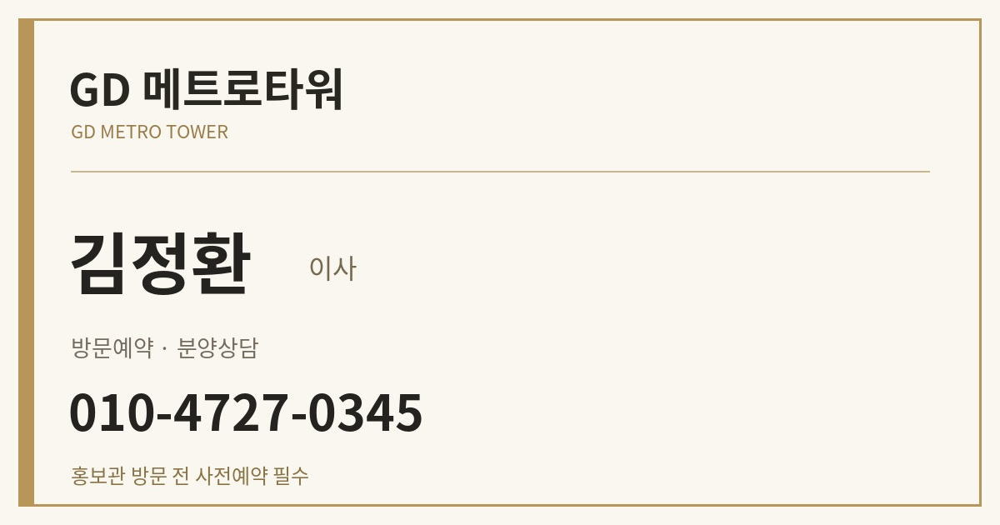

✨
구디역 직통 연결 예정!
GD 메트로타워 오피스텔
2호선으로 강남권 환승 없이
구로디지털단지·G밸리 인접
옛 BYC 본사 부지 · 최고 40층
전용 24~53㎡ 다양한 타입
홍보관 방문 전 사전예약 필수
상세 안내 · 소개 영상 · 평면도
방문예약 · 상담문의
김정환 이사
010-4727-0345

전화 연결
문자 보내기
홈페이지 보기
상세 조건과 방문 일정은 담당자에게 확인해 주세요.